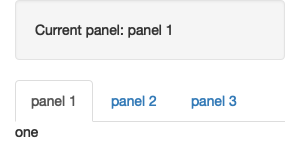
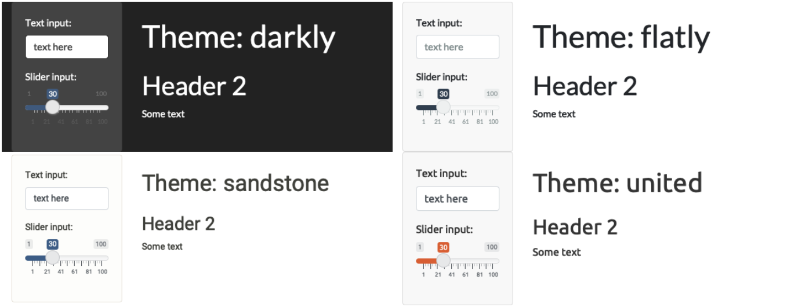
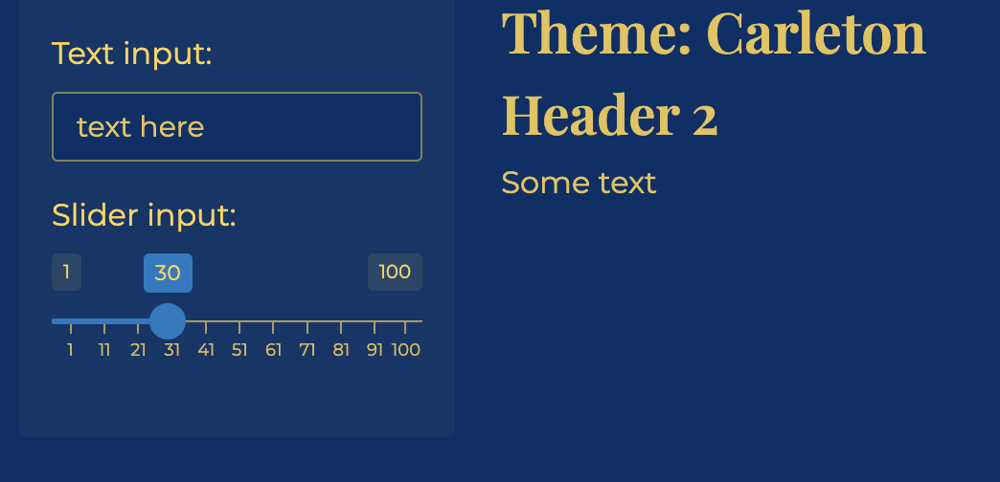
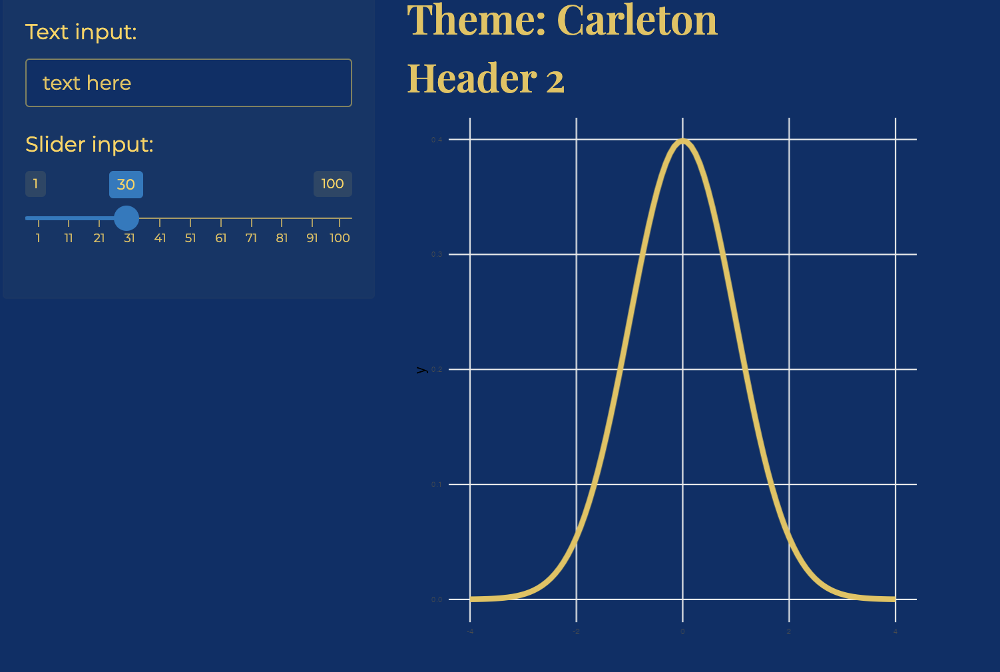
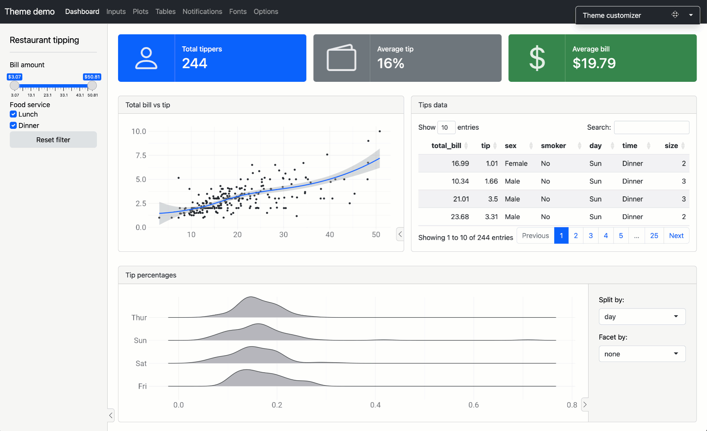

06:00
Collaborating on
GitHub +
Shiny Design
Day 25
Prof Amanda Luby
Carleton College
Stat 220 - Winter 2026
GitHub collaboration activity
When you and your teammates work on the lines of code within a document and both try to push your changes, you will run into issues.
Merge conflicts happen when you merge branches that have competing changes, and Git needs your help to decide which changes to incorporate in the final merge.
Our first task today is to walk you through a merge conflict!
Git review
- Pushing to a repo replaces the code on GitHub with the code you have on your computer.
- If a collaborator has made a change to your repo and pushed it to your collaborative GitHub repository, GitHub will stop you from pushing your changes to the repo because this could overwrite your collaborator’s work!
- So you need to explicitly “merge” your collaborator’s work before you can push.
- If your and your collaborator’s changes are in different files or in different parts of the same file, git merges the work for you automatically when you pull.
- If you both changed the same part of a file, git will produce a merge conflict because it doesn’t know how which change you want to keep and which change you want to overwrite.
Merge conflicts
- The
===separate your changes (top) from their changes (bottom). - Note that on top you see the word
HEAD, which indicates that these are your changes. - And at the bottom you see
some1alpha2numeric3string4. This is the hash (a unique identifier) of the commit your collaborator made with the conflicting change. - Your job is to reconcile the changes: edit the file so that it incorporates the best of both versions and delete the
<<<,===, and>>>lines. - Then you can stage and commit the result.
Setup
- Clone the
day25-yourgrouprepo and openapp.R - Assign the numbers 1, 2, and 3 to each team member. If your team has fewer than 3 people, some will need to have multiple numbers
- If your partner(s) aren’t here and you are currently a group of 1, join up with a group of 2 (Amanda will add you to their repo)
- Then, follow the instructions in the activity file to cause and then resolve merge conflicts
Shiny: warm-up
Open the following shinyapps and explore a little bit.
With the folks around you, discuss:
- Did any apps stand out as enjoyable or useful?
- What features or design choices make an app stand out?
- Are there any small tweaks you could make to make them more usable?
Your turn
Choose one person to do the following in your repo:
- Move the initial data preparation code to an R script called
data-prep.Rin the home folder - Write the cleaned dataset to a CSV or .Rds file in a
data/folder within theappfolderwrite_rds(manager_survey, "/data/manager-survey.rds")
- In the
app.Rfile, load the data withread_csvmanager_survey <- read_rds("data/manager-survey.rds")
05:00
Layouts
Page with sidebar

Multi-row
Multi-page: Tabsets
ui <- fluidPage(
sidebarLayout(
sidebarPanel(
textOutput("panel")
),
mainPanel(
tabsetPanel(
id = "tabset",
tabPanel("panel 1", "one"),
tabPanel("panel 2", "two"),
tabPanel("panel 3", "three")
)
)
)
)
server <- function(input, output, session) {
output$panel <- renderText({
paste("Current panel: ", input$tabset)
})
}
Multi-page: nav list
Multi-page: nav bar
Your turn
(1 per group) Reorganize the app so that the two graphs show up on different panels, tabsets, or pages in a navlist. Commit and push the changes so everybody has the new version.
05:00
Theming
Theming: built-in themes

Theming: customize

Plot theming

Add theme = bslib::bs_theme() to your ui() function, and bslib::bs_themer() to your server function to try out different options interactively

Your turn
One person per group should:
- Add a custom theme to the AskAManager app
- Update the ggplot themes to match
Run the app, commit, and push so everybody has the updated version.
04:00
Deploying an app
Shiny apps need to be “connected” to RStudio or a remote RStudio server
-
You can deploy shiny apps online
- using Posit’s cloud server (free/fee) - https://www.shinyapps.io/
- “Getting started” guide will walk you through connecting RStudio to your shinyapps.io account
- note: there is also now an option to deploy via Connect Cloud from your github. Feel free to try it!
- creating a shiny server
- using Posit’s cloud server (free/fee) - https://www.shinyapps.io/
Your app and files should be in their own folder and the entire folder is what you “deploy”. You do not want multiple
app.Ror.Rmdfiles in that folder!